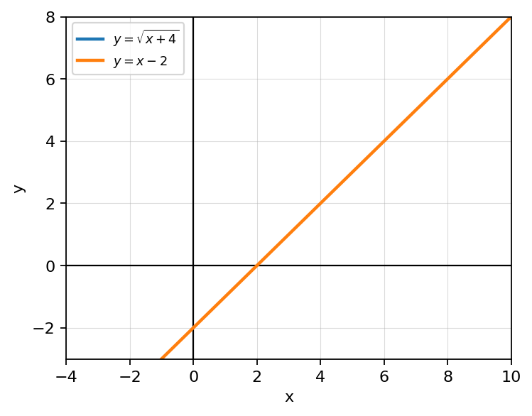
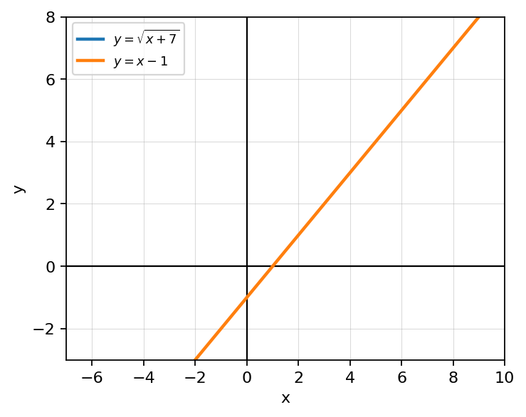
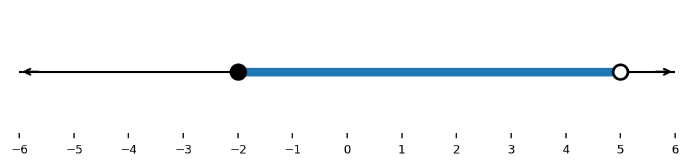
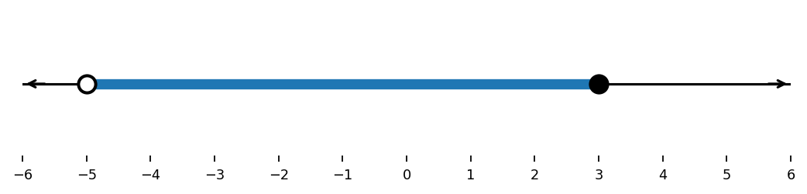
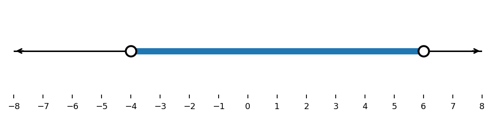
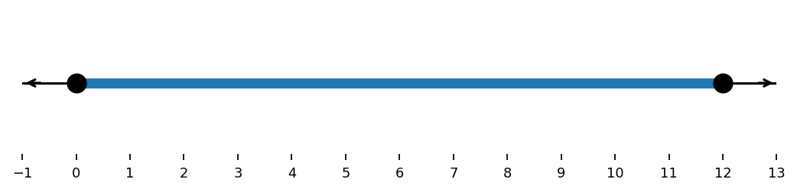

Solve and check: \[\sqrt{x+12}=6\]
Use a graph to solve: \[\sqrt{x+4}=x-2\]

Solve: \[\sqrt{2x+5}=x+1\]
Then explain how the solution relates to the intersection of two functions.
Design a graph-based square root equation problem where students solve by finding an intersection.

Write the set of all real numbers less than or equal to \(8\) using inequality notation.
Circle the correct interval notation for \(-5 < x \le 2\).
Write the interval shown on the number line in interval notation.

Write the graph shown on the number line as an inequality.

Graph \(-4 \le x < 2\) on a number line. Then write one sentence explaining your endpoint choices.
Graph \(( -\infty, 1 ]\) on a number line. Then write the equivalent inequality.
The number line could represent the possible input values for a function.

The number line could represent the number of months a student may participate in a program.

Let \(f(x)=x^2-9\) and \(g(x)=x-3\).
Given:
\(f(x)=\sqrt{x+4}\qquad g(x)=\frac{1}{x-2}\)
Determine the domain of:
Explain your reasoning.
Explain why:
\(\frac{x^2-4}{x-2}\)
and
\(x+2\)
have different graphs even though they simplify algebraically.
A student argues that function arithmetic is “just combining equations,” so domain does not need to be checked separately.